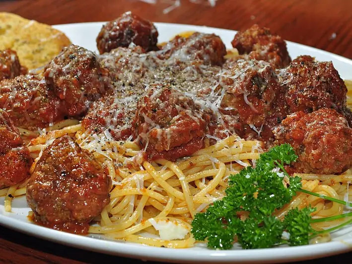

Фото: jeffreyw, CC BY 2.0

Тефтели в томатном соусе
Говяжьи тефтели с рисом, тушённые в томатной подливе
70 мин5 порц.510 ккал на порциюБ 25 · Ж 34 · У 26Русская кухня
Продукты на 5 порц.
- Говяжий фарш600 г
- Рис0,5 стак.
- Лук репчатый2 шт
- Морковь1 шт
- Яйцо куриное1 шт
- Томатная паста2 ст. л.
- Мука пшеничная2 ст. л.
- Вода2,5 стак.
- Растительное масло3 ст. л.
- Соль2 ч. л.
- Перец чёрный молотый2 щеп.
- Лавровый лист2 шт
Как готовить
- Рис промойте и варите в кипящей подсоленной воде 10 минут до полуготовности. Откиньте на сито и остудите.
- Одну луковицу натрите на тёрке и смешайте с фаршем, рисом, яйцом, половиной соли и перцем.
- Слепите мокрыми руками шарики размером с грецкий орех, обваляйте в половине муки.
- Обжарьте тефтели в половине масла на среднем огне по 2 минуты со всех сторон до лёгкой корочки. Переложите в кастрюлю или сотейник.
- Во второй сковороде на оставшемся масле обжарьте вторую луковицу, нарезанную кубиком, и тёртую морковь 5 минут до мягкости.
- Добавьте томатную пасту и оставшуюся муку, перемешайте, влейте воду и посолите. Доведите до кипения.
- Залейте тефтели соусом, положите лавровый лист. Тушите под крышкой на слабом огне 30 минут, соус должен загустеть.
Совет. Рис нужен именно полуготовый: сырой не успеет развариться, а полностью сваренный превратит тефтели в кашу.